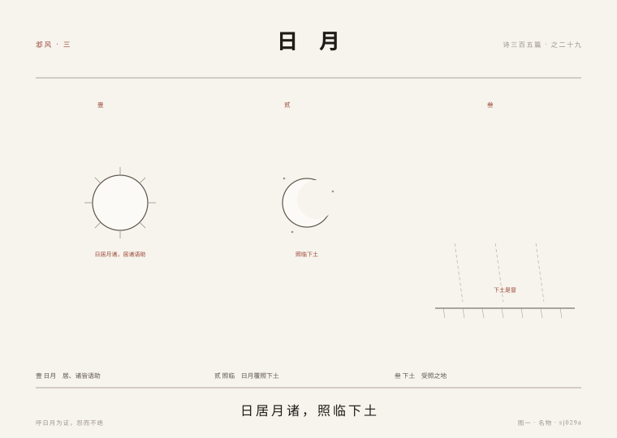
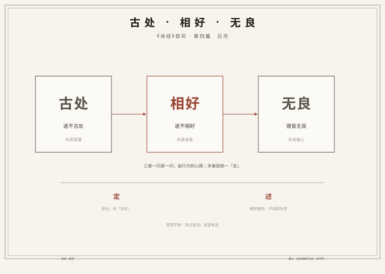

第二十九篇 日月
邶风 · 之三 SJ029
朗读 · 普通话
依经文正文朗读，句读从文；不配乐、不改速、不加拖腔。全库同一音色（豆包 TTS），非播音员录制。
一 解题
诗三判：
- 谁在说：一个被冷落、被亏待的人。开口先唤日月，以天地之大者为证；话是对日月说的，怨却对着那个人。
- 说什么事：那人相待不以古道、不相好、德音不良；末章呼父母，怨其养我不终，问这样的日子何时安定，慨叹对方待我不循常理。
- 为何编在此：上一篇写送别之哀，此篇写相处之怨。邶风由「情之变」再进一步，写到「礼之失」——夫妇之恩绝而未绝，怨而尚有所待。
《毛序》：「《日月》，卫庄姜伤己也。遭州吁之难，伤己不见答于先君，亦困而自伤之诗也。」——系于庄姜身世。
朱子《诗集传》：「庄姜不见答于庄公，故呼日月而诉之。」——朱子以为妇人不见答于夫，呼日月为证。
本库的看法：这首诗的骨在呼日月为证而怨，怨而不绝。
三章追问「古处」「相好」「无良」，一层比一层近于决裂；末章「父兮母兮」「报我不述」，怨已极，却仍以「胡能有定」作结——还盼一个安定。此与召南诸篇「备、敬、守、不争」截然不同：彼无怨，此怨深；但怨而不谩骂，不绝其情。
二 经文
第一章
日居月諸，照臨下土。乃如之人兮，逝不古處？
第二章
日居月諸，下土是冒。乃如之人兮，逝不相好？
第三章
日居月諸，出自東方。乃如之人兮，德音無良？
第四章
日居月諸，東方自出。父兮母兮，畜我不卒。胡能有定？報我不述。
分章：毛传、朱子皆四章。前三章章四句，末章章六句。前三章章法同：先呼日月，再以「乃如之人兮」指其人；末章添「父兮母兮」，由怨夫转呼父母，句法加长，情亦加迫。
三 韵读
| 一 |
諸、土、處 |
魚部 |
| 二 |
冒、好 |
幽部 |
| 三 |
方、良 |
陽部 |
| 四 |
卒、述（物部）；定（耕部） |
物部／耕部 |
一章魚部开阔，像对着大地呼喊；二章幽部收而怨深；三章陽部扬，责其德音；四章物部入声短促，「不卒」「不述」两声绝硬。全篇落脚声是「不述」——怨到无可诉说。
四 字义与名物
- 居、諸——皆语助，犹「啊」「乎」。不是「居住」「诸位」。
- 下土——大地，对上天而言。
- 冒——覆盖。下土是冒，即冒覆下土。
- 乃如之人——竟像这样的人。乃，竟；如，像。
- 逝——发语词，一说「逮、及」。此处读为语助，承上转折。
- 古處——以古道相处；古处，故处，旧日相待之道。不是「住在古代」。
- 相好——相亲爱。好，相善。
- 德音——声誉、好话。
- 無良——不善，不良善。
- 東方自出——从东方升起。
- 父兮母兮——呼父母而诉。
- 畜（xù）——养，怜爱。
- 不卒——不终，不长久。卒，终。
- 胡——何，为什么。
- 定——安，安定。不是「决定」。
- 報——相待、报答。
- 述——循，常理；一说「述，循也」。不述，不循常理。
五 今译
第一章
太阳啊月亮啊，照耀着这大地。竟有这样的人，待我不以古道相处？
第二章
太阳啊月亮啊，覆盖着这大地。竟有这样的人，不肯和我相好？
第三章
太阳啊月亮啊，从东方升起。竟有这样的人，说好话却并不良善？
第四章
太阳啊月亮啊，从东方升起。爹啊娘啊，养我却不终了。怎样才能安定？他待我不循常理。
译注：「居」「诸」皆语助，译出语气词「啊」，不译居住、诸位；「古处」译「以古道相处」，指旧日相待的常道；「定」译「安定」；「述」译「循常理」，「不述」即待我不合常理。
六 章旨
一章：不古处。相待失其常道。
二章：不相好。由失道进于不亲。
三章：德音无良。虚名好听，实质不善。
四章：呼父母而叹不终。怨极呼亲，问安无日，结在「不述」。
三章一问紧一问：古处—相好—无良，由行为到心肠。末章跳出夫妇，呼及父母，把委屈说到最亲的人面前。全篇是「怨而不绝」：责之愈切，犹望一「定」；若已绝，便不必呼日月、呼父母了。
对照召南的「守、不争」，此篇写的是失和之后的悬置。
七 诗教
- 赋：直陈其所遇之人与所怀之怨，日月只是张口即引的眼前大号。
- 观：可观一「怨」。怨有层次：不古处是失礼，不相好是失亲，无良是失德；观人观己，皆可由此分辨厚薄。
- 群：呼日月、呼父母，是把私人的委屈提到公共见证之前——二人之事，求天地亲长共证。
- 怨：此篇正是「怨」之正者。怨而不谩骂，不绝人，不诬人，只说相待之道有亏。
八 分寸与边界
- 不可把「居」「诸」解作「居住」「诸位」。二者皆语助，缀于日月之后以唤呼。
- 不可把「古处」解作「住在古时」。古处即故处，旧日相处的常道。
- 不可把「定」解作「决定」「定亲」。定是安，心安、身安。
- 不可把「畜」解作「牲畜」。畜读
xù，是养、怜爱。
- 不可把此篇读成撒泼咒骂。诗中无一句恶口，只反复追问相待之道；怨而不失其谨，是此篇分寸。
九 存疑
- 所怨何人：毛序系于庄姜怨庄公；一说妇人怨夫；一说臣子怨君。本库取「家人相待失道」，不坐实身份。
- 「逝」之训：一说语助，一说「逮及」（及而不古处）。本库从语助。
- 「冒」字：一说覆盖，一说「冒、勉」。本库从覆盖，承日月照临。
- 「述」字：毛传「述，循也」；一说「述，遂也」（顺遂）；一说「述，述叙」。本库从循理。
- 末章是否别有所指：一说「父兮母兮」叹己不得其所，一说追念父母生养之恩。本库取呼亲而诉。
十 跨典
- 《鄘风·柏舟》「之死矢靡它」——同是指天地为誓、以心自明；彼守而不改，此怨而未绝。
- 《邶风·终风》「莫往莫来，悠悠我思」——同卷遇人不淑之诗；彼心犹系，此怨已深。
- 《邶风·谷风》「泾以渭浊，湜湜其沚」——同是弃妇之怨；彼已见弃，此犹望定。
- 《礼记·孔子闲居》「天无私覆，地无私载，日月无私照」——日月之照临为公道之喻，正与此篇呼日月为证同意。
- 《左传·桓公三年》妇人「从夫」之义与夫妇「以礼相接」之旧——此篇所「古处」，即古人夫妇相待之常道。
十一 双卡与图
双卡五对：
| 居、诸（语助） |
居住、诸位（误训） |
| 古处（古道相处） |
居于古时（误训） |
| 定（安定） |
决定（误训） |
| 畜（养怜） |
牲畜（误训） |
| 怨而不绝 |
怨而谩骂 |

图一 · 日月·下土·呼诉 名物图

图二 · 古处—相好—无良 义理图
读图三处：
- 日月只作天象，不作人日：名物图以日轮、月轮为主，不画拟人神像；叁格日轮半出地平、月轮半落，两道淡形弧线一上一下示升落轨迹。
- 三格对应三章之责：义理图三格
古处—相好—无良，由行为到心肠，箭头递进；末章另以「定」「述」两尺标出。
- 「不绝」是骨：全篇虽怨，末句仍盼「有定」；图上箭头走到「无良」即止，不画决裂——留一线未绝之情。